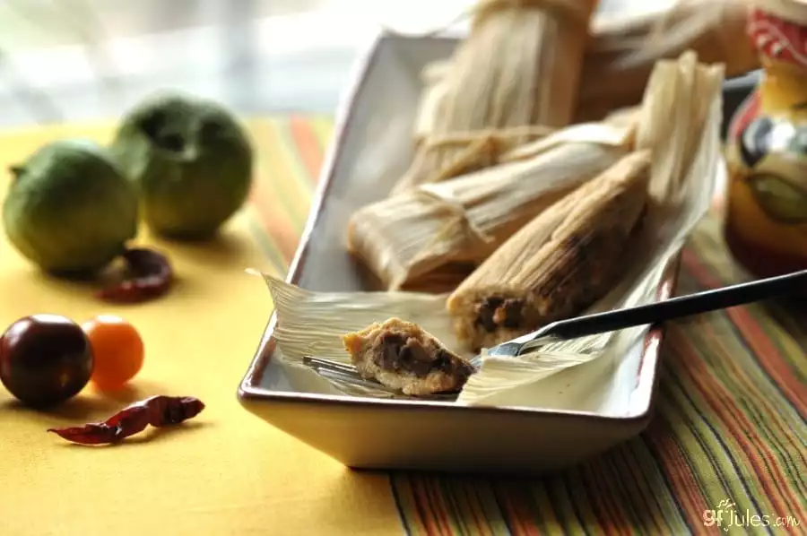

Gluten Free Tamales Recipe by GFJULES

Gluten free tamales are a fun treat at Cinco de Mayo, but once you get the hang of them (they’re really quite easy to make!), you’ll want to serve them year-round!
Fill with your favorite meat fillings, or follow my vegan recipe using refried black beans, homemade Mole sauce and homemade guacamole — treat them like a sandwich or fill with leftovers.
Made of gluten free masa harina dough, these yummy little purses cradle any savory or sweet filling, and look so rustic, wrapped up in corn husks or banana leaves.
Traditional tamale fillings vary by regions of Mexico, from shredded meat and chiles to brown beans, pineapple and corn, but while the fillings can differ, be sure to use true masa harina for your tamales, not corn meal or corn flour.
Masa harina is treated with lime and water to loosen the corn hulls and soften the corn kernels, making it easier to form into a dough and rendering the rich niacin nutrients in the corn more digestible.
Ingredients:
- 1 bag dried cornhusks (at least 25)
- 2 cups masa harina
- 1/2 cup coconut oil
- 1 teaspoon chili powder
- 3/4 teaspoon sea salt
- 3/4-1 cup gluten free broth (I used vegetable)
Instructions:
- Soak corn husks for several hours or overnight in a large pot of water.
- In a large food processor or stand mixing bowl, combine masa harina, coconut oil, salt and chili powder. Pulse 1 to 2 minutes or beat until mixture is light and fluffy.
-
Slowly stir in ½ cup vegetable broth while pulsing with the food processor or mixing with a stand mixer. If the dough isn’t holding together or is still crumbly, add ¼ cup more broth. (The dough should hold together when squeezed in the palm of your hand.)
-
Lay 1 soaked corn husk on a board with the tapered end facing you. Scoop out 2 to 3 tablespoons of masa mixture (depending on the size of the husk) and squeeze it in your hand to form an elongated ball of dough. Spread the dough out to 1/8 to ¼-inch thickness in the middle of the husk, leaving at least a ½-inch border on all sides.
-
Spoon about 1 tablespoon Refried Black Beans or other filling of choice in a line down the middle of the masa like a cigar. Drizzle Mole sauce or salsa over top, if desired.
-
Bring the 2 long sides of the husks together gently so that the masa curls around the filling like a blanket and the 2 sides of the masa just touch. Spread the husks out again and the masa should stay in the middle, folded around the filling. Bring up the bottom of the husk and fold over the masa. Then fold 1 long side over and then the other long side over, like you’re swaddling a baby. Finally, fold the top of the husk over and flip the tamale to keep that last flap closed.
-
Tear thin strips out of two husks to make “strings.” Tie 2 strings around each tamale to keep the husks closed. Repeat with remaining masa dough and husks.
-
Line a steamer basket with additional husks. Fill the bottom of a steamer or large pot with water and insert the steamer basket. Cover and heat until the water boils and steam forms. Place the individual wrapped tamales inside the basket and cover with additional cornhusks and the lid. Steam 15 to 20 minutes. Remove a tamale to test for doneness. Tamales are done when they’re still moist but peel away from the husks easily. If not done, return to the steamer basket and continue cooking until done.
-
Serve warm with additional Mole sauce for dipping and with homemade guacamole and refried black beans, for a full-on fiesta!